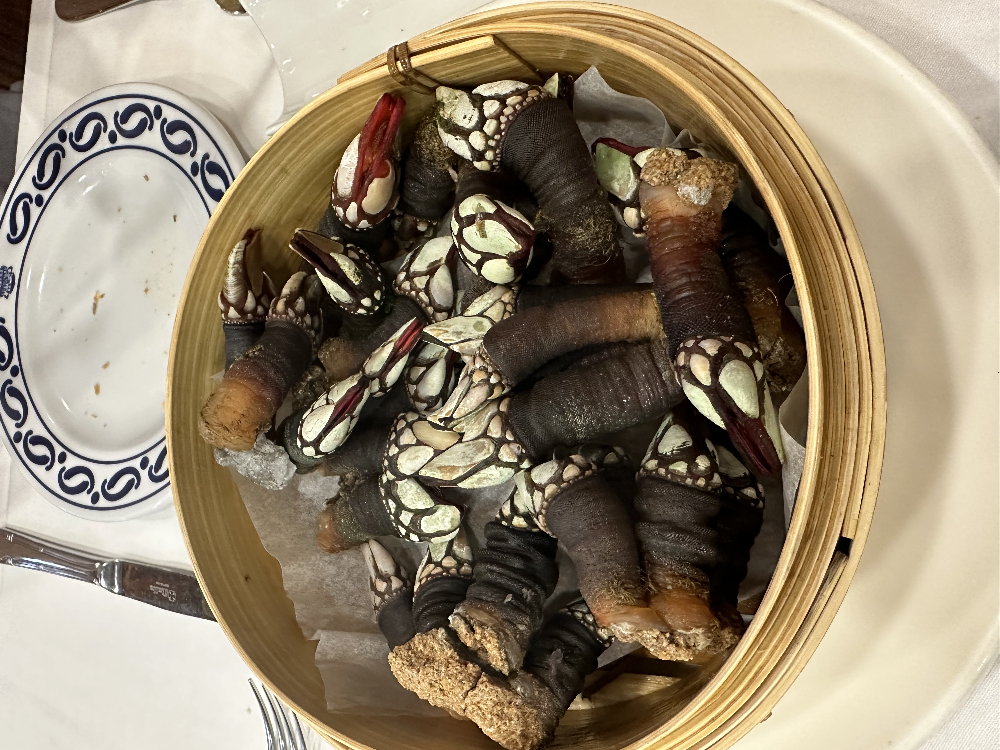
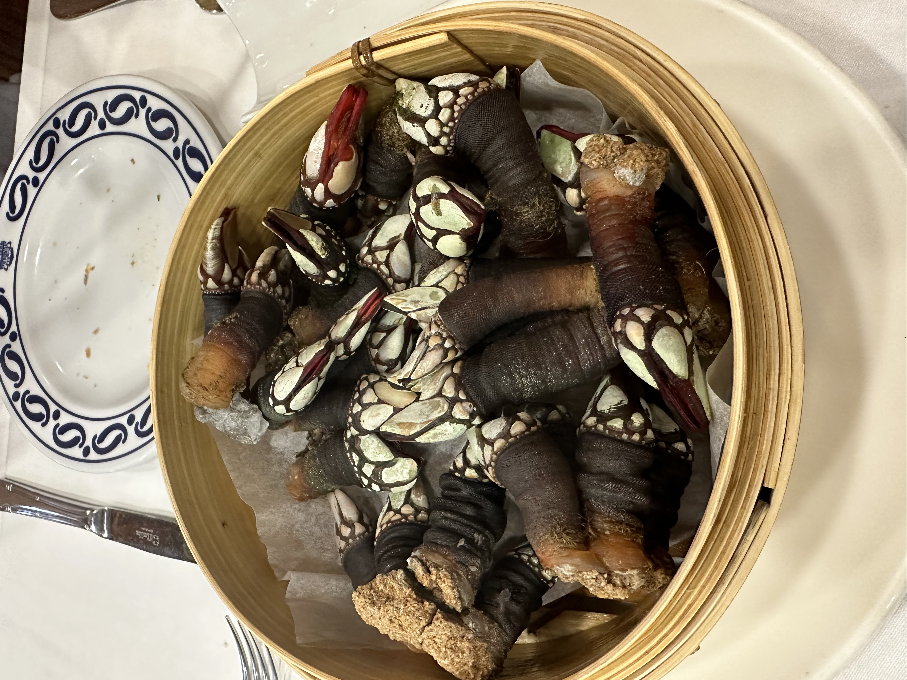
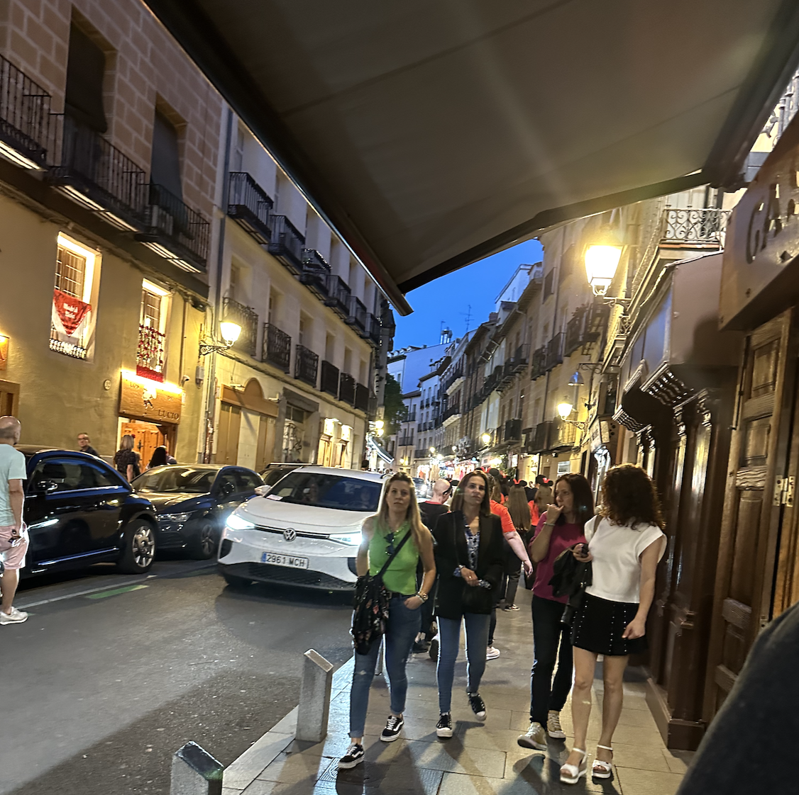
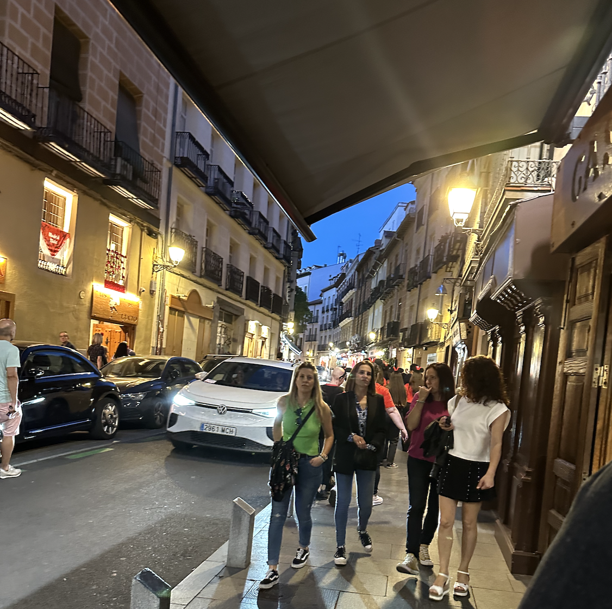

About Madrid

Going to Madrid was a once in a life time experience for me. Being in a place where the culture is so unique, the language is different, and the food is like none other was really amazing to me. I started off my day with a nap and followed up with the most unique experience of my life. I tried Barnacles! I learned that this is an extremely rare food as these are grown on cliffs where the waves crash - making them very hard to recieve. This was reallt neat and I got to finish off this meal with a Cheese Cake.
My second experience in Madrid was the most amazing birthday dinner. Here I had Jamon Iberico. This is a Spanish Ham where the pigs are fed Acorn instead of Grass - enhancing the taste. The jamon is taken from legs that they store on the wall and it had the most unbelievable taste. Another food that amazed me were the Anchoves. These had such a memoerable flavor, far different from anything in America. It was very nice to celebrate / suprise Jorge Bohorquez on his birthday!
Gallery

 



 
